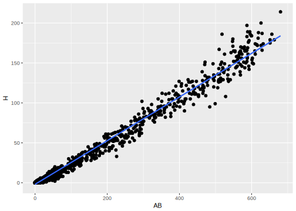

10 Introduction to tidy regression analysis
Linear regression is a very elegant, simple, powerful and commonly used technique for data analysis.
10.1 Simple Regression
Let’s start with the simplest linear model. The goal here is to analyze the relationship between a continuous numerical variable \(Y\) and another (numerical or categorical) variable \(X\). We assume that in our population of interest the relationship between the two is given by a linear function:
\[ Y = \beta_0 + \beta_1 X \]
Here is (simulated) data from an advertising campaign measuring sales and the amount spent in advertising. We think that sales are related to the amount of money spent on TV advertising:
\[ \mathtt{sales} \approx \beta_0 + \beta_1 \times \mathtt{TV} \]
Given this data, we would say that we regress sales on TV when we perform this regression analysis. As before, given data we would like to estimate what this relationship is in the population (what is the population in this case?). What do we need to estimate in this case? Values for \(\beta_0\) and \(\beta_1\).
Let’s take a look at some data. Here is data measuring characteristics of cars, including horsepower, weight, displacement, miles per gallon. Let’s see how well a linear model captures the relationship between miles per gallon and weight
library(ISLR)
library(dplyr)
library(ggplot2)
library(broom)
data(Auto)
Auto %>%
ggplot(aes(x=weight, y=mpg)) +
geom_point() +
geom_smooth(method=lm) +
theme_minimal()
In R, linear models are built using the lm function
auto_fit <- lm(mpg~weight, data=Auto)
auto_fit##
## Call:
## lm(formula = mpg ~ weight, data = Auto)
##
## Coefficients:
## (Intercept) weight
## 46.216525 -0.007647This states that for this dataset \(\hat{\beta}_0 = 46.2165245\) and \(\hat{\beta}_1 = -0.0076473\). What’s the interpretation? According to this model, a weightless car weight=0 would run \(\approx 46.22\) miles per gallon on average, and, on average, a car would run \(\approx 0.008\) miles per gallon fewer for every extra pound of weight. Note, that the units of the outcome \(Y\) and the predictor \(X\) matter for the interpretation of these values.
10.2 Inference
Now that we have an estimate, we want to know how good of an estimate this is. An important point to understand is that like the sample mean, the regression line we learn from a specific dataset is an estimate. A different sample from the same population would give us a different estimate (regression line).
But, statistical theory tells us that, on average, we are close to population regression line (I.e., close to \(\beta_0\) and \(\beta_1\)), that the spread around \(\beta_0\) and \(\beta_1\) is well approximated by a normal distribution and that the spread goes to zero as the sample size increases.
10.2.1 Confidence Interval
We can construct a confidence interval to say how precise we think our estimates of the population regression line is. In particular, we want to see how precise our estimate of \(\beta_1\) is, since that captures the relationship between the two variables.
auto_fit_stats <- auto_fit %>%
tidy() %>%
select(term, estimate, std.error)
auto_fit_stats## term estimate std.error
## 1 (Intercept) 46.216524549 0.7986724633
## 2 weight -0.007647343 0.0002579633This tidy function is defined by the broom package, which is very handy to manipulate the result of learning models in a consistent manner. The select call removes some extra information that we will discuss shortly.
Given the confidence interval, we would say, “on average, a car runs \(_{-0.0082} -0.0076_{-0.0071}\) miles per gallon fewer per pound of weight.
10.2.2 The \(t\)-statistic and the \(t\)-distribution
We can also test a null hypothesis about this relationship: “there is no relationship between weight and miles per gallon”, which translates to \(\beta_1=0\). According to the statistical theory if this hypothesis is true then the distribution of \(\hat{\beta}_1\) is well approximated by \(N(0,\mathrm{se}(\hat{\beta}_1))\), and if we observe the estimated \(\hat{\beta}_1\) is too far from 0 according to this distribution then we reject the hypothesis.
Now, there is a technicality here that is worth paying attention to. The normal approximation is good as sample size increases, but what about moderate sample sizes (say, less than 100)? The \(t\) distribution provides a better approximation of the sampling distribution of these estimates for moderate sample sizes, and it tends to the normal distribution as sample size increases.
The \(t\) distribution is commonly used in this testing situation to obtain the probability of rejecting the null hypothesis. It is based on the \(t\)-statistic
\[ \frac{\hat{\beta}_1}{\mathrm{se}(\hat{\beta}_1)} \]
You can think of this as a signal-to-noise ratio, or a standardizing transformation on the estimated parameter. Under the null hypothesis, it was shown that the \(t\)-statistic is well approximated by a \(t\)-distribution with \(n-2\) degrees of freedom (we will get back to degrees of freedom shortly).
In our example, we get a \(t\) statistic and P-value as follows:
auto_fit_stats <- auto_fit %>%
tidy()
auto_fit_stats## term estimate std.error statistic p.value
## 1 (Intercept) 46.216524549 0.7986724633 57.86668 1.623069e-193
## 2 weight -0.007647343 0.0002579633 -29.64508 6.015296e-102We would say: “We found a statistically significant relationship between weight and miles per gallon. On average, a car runs \(_{-0.0082} -0.0076_{-0.0071}\) miles per gallon fewer per pound of weight (\(t\)=-29.65, \(p\)-value < \(6.02\times 10^{-102}\)).”
10.2.3 Global Fit
Now, notice that we can make predictions based on our regression model, and that prediction should be better than a prediction with a simple average. We can use this comparison as a measure of how good of a job we are doing using our model to fit this data: how much of the variance of \(Y\) can we explain with our model. To do this we can calculate total sum of squares:
\[ TSS = \sum_i (y_i - \overline{y})^2 \]
(this is the squared error of a prediction using the sample mean of \(Y\))
and the residual sum of squares:
\[ RSS = \sum_i (y_i - \hat{y}_i)^2 \]
(which is the squared error of a prediction using the linear model we learned)
The commonly used \(R^2\) measure comparse these two quantities:
\[ R^2 = \frac{\mathrm{TSS}-\mathrm{RSS}}{\mathrm{TSS}} = 1 - \frac{\mathrm{RSS}}{\mathrm{TSS}} \]
These types of global statistics for the linear model can be obtained using the glance function in the broom package. In our example
auto_fit %>%
glance() %>%
select(r.squared, sigma, statistic, df, p.value)## r.squared sigma statistic df p.value
## 1 0.6926304 4.332712 878.8309 2 6.015296e-102We will explain the the columns statistic, df and p.value when we discuss regression using more than a single predictor \(X\).
10.3 Some important technicalities
We mentioned above that predictor \(X\) could be numeric or categorical. However, this is not precisely true. We can use a transformation to represent categorical variables. Here is a simple example:
Suppose we have a categorical variable sex with values female and male, and we want to show the relationship between, say credit card balance and sex. We can create a dummy variable \(x\) as follows:
\[ x_i = \left\{ \begin{aligned} 1 & \textrm{ if female} \\ 0 & \textrm{o.w.} \end{aligned} \right. \]
and fit a model \(y = \beta_0 + \beta_1 x\). What is the conditional expectation given by this model? If the person is male, then \(y=\beta_0\), if the person is female, then \(y=\beta_0 + \beta_1\). So, what is the interpretation of \(\beta_1\)? The average difference in credit card balance between females and males.
We could do a different encoding:
\[ x_i = \left\{ \begin{aligned} +1 & \textrm{ if female} \\ -1 & \textrm{o.w.} \end{aligned} \right. \]
Then what is the interpretation of \(\beta_1\) in this case?
Note, that when we call the lm(y~x) function and x is a factor with two levels, the first transformation is used by default. What if there are more than 2 levels? We need multiple regression, which we will see shortly.
10.4 Issues with linear regression
There are some assumptions underlying the inferences and predictions we make using linear regression that we should verify are met when we use this framework. Let’s start with four important ones that apply to simple regression
10.4.1 Non-linearity of outcome-predictor relationship
What if the underlying relationship is not linear? We will see later that we can capture non-linear relationships between variables, but for now, let’s concentrate on detecting if a linear relationship is a good approximation. We can use exploratory visual analysis to do this for now by plotting residuals \((y_i - \hat{y}_i)^2\) as a function of the fitted values \(\hat{y}_i\).
The broom package uses the augment function to help with this task. It augments the input data used to learn the linear model with information of the fitted model for each observation
augmented_auto <- auto_fit %>%
augment()
augmented_auto %>% head()## .rownames mpg weight .fitted .se.fit .resid .hat .sigma
## 1 1 18 3504 19.42024 0.2575448 -1.420236 0.003533343 4.337678
## 2 2 15 3693 17.97489 0.2862653 -2.974889 0.004365337 4.335643
## 3 3 18 3436 19.94026 0.2487426 -1.940256 0.003295950 4.337158
## 4 4 16 3433 19.96320 0.2483756 -3.963198 0.003286232 4.333606
## 5 5 17 3449 19.84084 0.2503543 -2.840840 0.003338799 4.335878
## 6 6 15 4341 13.01941 0.4142337 1.980589 0.009140525 4.337104
## .cooksd .std.resid
## 1 0.0001911753 -0.3283745
## 2 0.0010380292 -0.6881147
## 3 0.0003326721 -0.4485553
## 4 0.0013838821 -0.9162219
## 5 0.0007225022 -0.6567698
## 6 0.0009727164 0.4592282With that we can make the plot we need to check for possible non-linearity
augmented_auto %>%
ggplot(aes(x=.fitted,y=.resid)) +
geom_point() +
geom_smooth() +
labs(x="fitted", y="residual")## `geom_smooth()` using method = 'loess'
10.4.2 Correlated Error
For our inferences to be valid, we need residuals to be independent and identically distributed. We can spot non independence if we observe a trend in residuals as a function of the predictor \(X\). Here is a simulation to demonstrate this:

In this case, our standard error estimates would be underestimated and our confidence intervals and hypothesis testing results would be biased.
10.4.3 Non-constant variance
Another violation of the iid assumption would be observed if the spread of residuals is not independent of the fitted values. Here is an illustration, and a possible fix using a log transformation on the outcome \(Y\).
10.5 Multivariate Regression
Now that we’ve seen regression using a single predictor we’ll move on to regression using multiple predictors. In this case, we use models of conditional expectation represented as linear functions of multiple variables.
In the case of our advertising example, this would be a model:
\[ \mathtt{sales} = \beta_0 + \beta_1 \times \mathtt{TV} + \beta_2 \times \mathtt{newspaper} + \beta_3 \times \mathtt{facebook} \]
These models let us make statements of the type: “holding everything else constant, sales increased on average by 1000 per dollar spent on Facebook advertising” (this would be given by parameter \(\beta_3\) in the example model).
10.5.1 Estimation in multivariate regression
Continuing with our Auto example, we can build a model for miles per gallon using multiple predictors:
auto_fit <- lm(mpg~1+weight+cylinders+horsepower+displacement+year, data=Auto)
auto_fit##
## Call:
## lm(formula = mpg ~ 1 + weight + cylinders + horsepower + displacement +
## year, data = Auto)
##
## Coefficients:
## (Intercept) weight cylinders horsepower displacement
## -12.779493 -0.006524 -0.343690 -0.007715 0.006996
## year
## 0.749924From this model we can make the statement: “Holding everything else constant, cars run 0.76 miles per gallon more each year on average”.
10.5.2 Statistical statements (cont’d)
Like simple linear regression, we can construct confidence intervals, and test a null hypothesis of no relationship (\(\beta_j=0\)) for the parameter corresponding to each predictor. This is again nicely managed by the broom package:
auto_fit_stats <- auto_fit %>%
tidy()
auto_fit_stats %>% knitr::kable()| term | estimate | std.error | statistic | p.value |
|---|---|---|---|---|
| (Intercept) | -12.7794934 | 4.2739387 | -2.9900975 | 0.0029676 |
| weight | -0.0065245 | 0.0005866 | -11.1215621 | 0.0000000 |
| cylinders | -0.3436900 | 0.3315619 | -1.0365786 | 0.3005812 |
| horsepower | -0.0077149 | 0.0107036 | -0.7207702 | 0.4714872 |
| displacement | 0.0069964 | 0.0073095 | 0.9571736 | 0.3390787 |
| year | 0.7499243 | 0.0524361 | 14.3016700 | 0.0000000 |
In this case we would reject the null hypothesis of no relationship only for predictors weight and year. We would write the statement for year as follows:
“Holding everything else constant, cars run \({}_{0.65} 0.75_{0.85}\) miles per gallon more each year on average (P-value\(<1e-16\))”.
10.5.3 The F-test
We can make additional statements for multivariate regression: “is there a relationship between any of the predictors and the response?”. Mathematically, we write this as \(\beta_1 = \beta_2 = \cdots = \beta_p = 0\).
Under the null, our model for \(y\) would be estimated by the sample mean \(\overline{y}\), and the error for that estimate is by total sum of squared error \(TSS\). As before, we can compare this to the residual sum of squared error \(RSS\) using the \(F\) statistic:
\[ \frac{(\mathrm{TSS}-\mathrm{RSS})/p}{\mathrm{RSS}/(n-p-1)} \]
If this statistic is greater (enough) than 1, then we reject hypothesis that there is no relationship between response and predictors.
Back to our example, we use the glance function to compute this type of summary:
auto_fit %>%
glance() %>%
select(r.squared, sigma, statistic, df, p.value) %>%
knitr::kable()| r.squared | sigma | statistic | df | p.value |
|---|---|---|---|---|
| 0.8089093 | 3.433902 | 326.7965 | 6 | 0 |
In comparison with the linear model only using weight, this multivariate model explains more of the variance of mpg, but using more predictors. This is where the notion of degrees of freedom comes in: we now have a model with expanded representational ability.
However, the bigger the model, we are conditioning more and more, and intuitively, given a fixed dataset, have fewer data points to estimate conditional expectation for each value of the predictors. That means, that are estimated conditional expectation is less precise.
To capture this phenomenon, we want statistics that tradeoff how well the model fits the data, and the “complexity” of the model. Now, we can look at the full output of the glance function:
auto_fit %>%
glance() %>%
knitr::kable()| r.squared | adj.r.squared | sigma | statistic | p.value | df | logLik | AIC | BIC | deviance | df.residual |
|---|---|---|---|---|---|---|---|---|---|---|
| 0.8089093 | 0.806434 | 3.433902 | 326.7965 | 0 | 6 | -1036.81 | 2087.62 | 2115.419 | 4551.589 | 386 |
Columns AIC and BIC display statistics that penalize model fit with model size. The smaller this value, the better. Let’s now compare a model only using weight, a model only using weight and year and the full multiple regression model we saw before.
lm(mpg~weight, data=Auto) %>%
glance() %>%
knitr::kable()| r.squared | adj.r.squared | sigma | statistic | p.value | df | logLik | AIC | BIC | deviance | df.residual |
|---|---|---|---|---|---|---|---|---|---|---|
| 0.6926304 | 0.6918423 | 4.332712 | 878.8309 | 0 | 2 | -1129.969 | 2265.939 | 2277.852 | 7321.234 | 390 |
lm(mpg~weight+year, data=Auto) %>%
glance() %>%
knitr::kable()| r.squared | adj.r.squared | sigma | statistic | p.value | df | logLik | AIC | BIC | deviance | df.residual |
|---|---|---|---|---|---|---|---|---|---|---|
| 0.8081803 | 0.8071941 | 3.427153 | 819.473 | 0 | 3 | -1037.556 | 2083.113 | 2098.998 | 4568.952 | 389 |
In this case, using more predictors beyond weight and year doesn’t help.
10.5.4 Categorical predictors (cont’d)
We saw transformations for categorical predictors with only two values, and deferred our discussion of categorical predictors with more than two values. In our example we have the origin predictor, corresponding to where the car was manufactured, which has multiple values
Auto <- Auto %>%
mutate(origin=factor(origin))
levels(Auto$origin)## [1] "1" "2" "3"As before, we can only use numerical predictors in linear regression models. The most common way of doing this is to create new dummy predictors to encode the value of the categorical predictor. Let’s take a categorical variable major that can take values CS, MATH, BUS. We can encode these values using variables \(x_1\) and \(x_2\)
\[ x_1 = \left\{ \begin{aligned} 1 & \textrm{ if MATH} \\ 0 & \textrm{ o.w.} \end{aligned} \right. \]
\[ x_2 = \left\{ \begin{aligned} 1 & \textrm{ if BUS} \\ 0 & \textrm{ o.w.} \end{aligned} \right. \]
Now let’s build a model to capture the relationship between salary and major:
\[ \mathtt{salary} = \beta_0 + \beta_1 x_1 + \beta_2 x_2 \]
What is the expected salary for a CS major? \(\beta_0\).
For a MATH major? \(\beta_0 + \beta_1\). For a BUS major? \(\beta_0 + \beta_2\).
So, \(\beta_1\) is the average difference in salary between MATH and CS majors. How can we calculate the average difference in salary between MATH and BUS majors? \(\beta_1 - \beta_2\).
The lm function in R does this transformation by default when a variable has class factor. We can see what the underlying numerical predictors look like by using the model_matrix function and passing it the model formula we build:
extended_df <- model.matrix(~factor(origin), data=Auto) %>%
as.data.frame() %>%
mutate(origin = factor(Auto$origin))extended_df %>%
filter(origin == "1") %>% head()## (Intercept) factor(origin)2 factor(origin)3 origin
## 1 1 0 0 1
## 2 1 0 0 1
## 3 1 0 0 1
## 4 1 0 0 1
## 5 1 0 0 1
## 6 1 0 0 1extended_df %>%
filter(origin == "2") %>% head()## (Intercept) factor(origin)2 factor(origin)3 origin
## 1 1 1 0 2
## 2 1 1 0 2
## 3 1 1 0 2
## 4 1 1 0 2
## 5 1 1 0 2
## 6 1 1 0 2extended_df %>%
filter(origin == "3") %>% head()## (Intercept) factor(origin)2 factor(origin)3 origin
## 1 1 0 1 3
## 2 1 0 1 3
## 3 1 0 1 3
## 4 1 0 1 3
## 5 1 0 1 3
## 6 1 0 1 310.6 Interactions in linear models
The linear models so far include additive terms for a single predictor. That let us made statemnts of the type “holding everything else constant…”. But what if we think that a pair of predictors together have a relationship with the outcome. We can add these interaction terms to our linear models as products:
Consider the advertising example:
\[ \mathtt{sales} = \beta_0 + \beta_1 \times \mathtt{TV} + \beta_2 \times \mathtt{facebook} + \beta_3 \times (\mathtt{TV} \times \mathtt{facebook}) \]
If \(\beta_3\) is positive, then the effect of increasing TV advertising money is increased if facebook advertising is also increased.
When using categorical variables, interactions have an elegant interpretation. Consider our car example, and suppose we build a model with an interaction between weight and origin. Let’s look at what the numerical predictors look like:
Auto$origin <- factor(Auto$origin)
extended_df <- model.matrix(~weight+origin+weight:origin, data=Auto) %>%
as.data.frame() %>%
mutate(origin = factor(Auto$origin))
extended_df %>%
filter(origin == "1") %>% head()## (Intercept) weight origin2 origin3 weight:origin2 weight:origin3 origin
## 1 1 3504 0 0 0 0 1
## 2 1 3693 0 0 0 0 1
## 3 1 3436 0 0 0 0 1
## 4 1 3433 0 0 0 0 1
## 5 1 3449 0 0 0 0 1
## 6 1 4341 0 0 0 0 1extended_df %>%
filter(origin == "2") %>% head()## (Intercept) weight origin2 origin3 weight:origin2 weight:origin3 origin
## 1 1 1835 1 0 1835 0 2
## 2 1 2672 1 0 2672 0 2
## 3 1 2430 1 0 2430 0 2
## 4 1 2375 1 0 2375 0 2
## 5 1 2234 1 0 2234 0 2
## 6 1 2123 1 0 2123 0 2extended_df %>%
filter(origin == "3") %>% head()## (Intercept) weight origin2 origin3 weight:origin2 weight:origin3 origin
## 1 1 2372 0 1 0 2372 3
## 2 1 2130 0 1 0 2130 3
## 3 1 2130 0 1 0 2130 3
## 4 1 2228 0 1 0 2228 3
## 5 1 1773 0 1 0 1773 3
## 6 1 1613 0 1 0 1613 3So what is the expected miles per gallon for a car with origin == 1 as a function of weight?
\[ \mathtt{mpg} = \beta_0 + \beta_1 \times \mathtt{weight} \]
Now how about a car with origin == 2?
\[ \mathtt{mpg} = \beta_0 + \beta_1 \times \mathtt{weight} + \beta_2 + \beta_4 \times \mathtt{weight} \]
Now think of the graphical representation of these lines. For origin == 1 the intercept of the regression line is \(\beta_0\) and its slope is \(\beta_1\). For origin == 2 the intercept of the regression line is \(\beta_0 + \beta_2\) and its slope is \(\beta_1+\beta_4\).
ggplot does this when we map a factor variable to a aesthetic, say color, and use the geom_smooth method:
Auto %>%
ggplot(aes(x=weight, y=mpg, color=origin)) +
geom_point() +
geom_smooth(method=lm)
The intercept of the three lines seem to be different, but the slope of origin == 3 looks different (decreases faster) than the slopes of origin == 1 and origin == 2 that look very similar to each other.
Let’s fit the model and see how much statistical confidence we can give to those observations:
auto_fit <- lm(mpg~weight*origin, data=Auto)
auto_fit_stats <- auto_fit %>%
tidy()
auto_fit_stats %>% knitr::kable()| term | estimate | std.error | statistic | p.value |
|---|---|---|---|---|
| (Intercept) | 43.1484685 | 1.1861118 | 36.3780794 | 0.0000000 |
| weight | -0.0068540 | 0.0003423 | -20.0204971 | 0.0000000 |
| origin2 | 1.1247469 | 2.8780381 | 0.3908033 | 0.6961582 |
| origin3 | 11.1116815 | 3.5743225 | 3.1087518 | 0.0020181 |
| weight:origin2 | 0.0000036 | 0.0011106 | 0.0032191 | 0.9974332 |
| weight:origin3 | -0.0038651 | 0.0015411 | -2.5079723 | 0.0125521 |
So we can say that for origin == 3 the relationship between mpg and weight is different but not for the other two values of origin. Now, there is still an issue here because this could be the result of a poor fit from a linear model, it seems none of these lines do a very good job of modeling the data we have. We can again check this for this model:
auto_fit %>%
augment() %>%
ggplot(aes(x=.fitted, y=.resid)) +
geom_point()
The fact that residuals are not centered around zero suggests that a linear fit does not work well in this case.
10.7 Additional issues with linear regression
We saw previously some issues with linear regression that we should take into account when using this method for modeling. Multiple linear regression introduces an additional issue that is extremely important to consider when interpreting the results of these analyses: collinearity.

In this example, you have two predictors that are very closely related. In that case, the set of \(\beta\)’s that minimize RSS may not be unique, and therefore our interpretation is invalid. You can identify this potential problem by regressing predictors onto each other. The usual solution is to fit models only including one of the colinear variables.
10.8 Exercise
Here you will practice and experiment with linear regression using data from gapminder.org. I recommend spending a little time looking at material there, it is quite an informative site.
We will use a subset of data provided by gapminder provided by Jennifer Bryan described in it’s github page.
The following commands load the dataset
library(gapminder)
data(gapminder)For this exercise you will explore how life expectancy has changed over 50 years across the world, and how economic measures like gross domestic product (GDP) are related to it.
Exercise 1: Make a scatter plot of life expectancy across time.
Question 1: Is there a general trend (e.g., increasing or decreasing) for life expectancy across time? Is this trend linear? (answering this qualitatively from the plot, you will do a statistical analysis of this question shortly)
A slightly different way of making the same plot is looking at the distribution of life expectancy across countries as it changes over time:
library(dplyr)
library(ggplot2)
gapminder %>%
ggplot(aes(x=factor(year), y=lifeExp)) +
geom_violin() +
labs(title="Life expectancy over time",
x = "year",
y = "life expectancy")
This type of plot is called a violin plot, and it displays the distribution of the variable in the y-axis for each value of the variable in the x-axis.
Question 2: How would you describe the distribution of life expectancy across countries for individual years? Is it skewed, or not? Unimodal or not? Symmetric around it’s center?
Based on this plot, consider the following questions.
Question 3: Suppose I fit a linear regression model of life expectancy vs. year (treating it as a continuous variable), and test for a relationship between year and life expectancy, will you reject the null hypothesis of no relationship? (do this without fitting the model yet. I am testing your intuition.)
Question 4: What would a violin plot of residuals from the linear model in Question 3 vs. year look like? (Again, don’t do the analysis yet, answer this intuitively)
Question 5: According to the assumptions of the linear regression model, what should that violin plot look like?
Exercise 2: Fit a linear regression model using the lm function for life expectancy vs. year (as a continuous variable). Use the broom::tidy to look at the resulting model.
Question 6: On average, by how much does life expectancy increase every year around the world?
Question 7: Do you reject the null hypothesis of no relationship between year and life expectancy? Why?
Exercise 3: Make a violin plot of residuals vs. year for the linear model from Exercise 2 (use the broom::augment function).
Question 8: Does the plot of Excersize 3 match your expectations (as you answered Question 4)?
Exercise 4: Make a boxplot (or violin plot) of model residuals vs. continent.
Question 9: Is there a dependence between model residual and continent? If so, what would that suggest when performing a regression analysis of life expectancy across time?
Exercise 5: Use geom_smooth(method=lm) in ggplot as part of a scatter plot of life expectancy vs. year, grouped by continent (e.g., using the color aesthetic mapping).
Question 10: Based on this plot, should your regression model include an interaction term for continent and year? Why?
Exercise 6: Fit a linear regression model for life expectancy including a term for an interaction between continent and year. Use the broom::tidy function to show the resulting model.
Question 11: Are all parameters in the model significantly different from zero? If not, which are not significantly different from zero?
Question 12: On average, by how much does life expectancy increase each year for each continent? (Provide code to answer this question by extracting relevant estimates from model fit)
Exercise 7: Use the anova function to perform an F-test that compares how well two models fit your data: (a) the linear regression models from Exercise 2 (only including year as a covariate) and (b) Exercise 6 (including interaction between year and continent).
Question 13: Is the interaction model significantly better than the year-only model? Why?
Exercise 8: Make a residuals vs. year violin plot for the interaction model. Comment on how well it matches assumptions of the linear regression model. Do the same for a residuals vs. fitted values model. (You should use the broom::augment function).